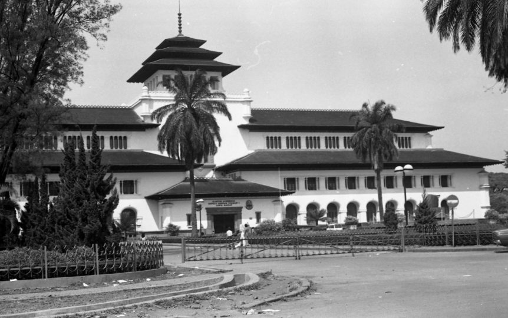
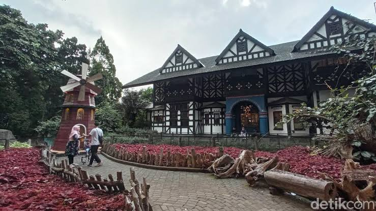
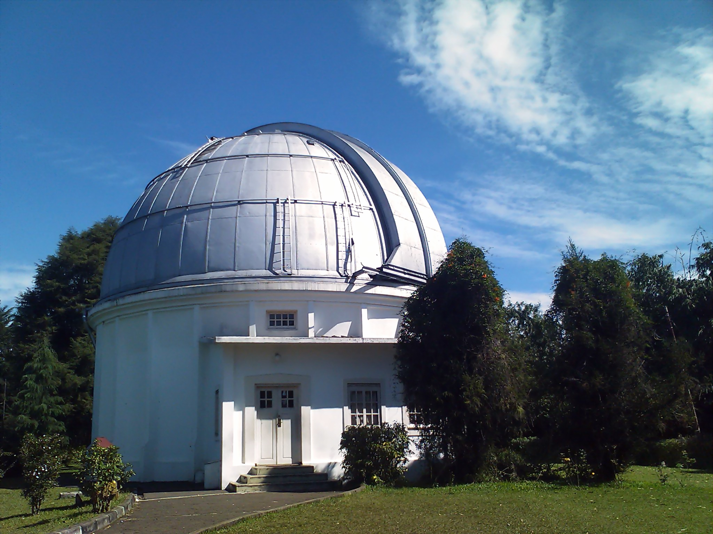

sejarah

Kata bandung berasal dari kata bandung atau bendungan karena terbendungnya sungai
citarum oleh lava gunung tangkuban parahu yang lalu membentukk telaga. Legenda yang
diceitakan oleh orang-orang tua di bandung mengatakan bahwa nama Bandung diambil dari
sebuah kendaraan air yang terdiri dari dua perahu yang diikat berdampingan yang disebut
perahu bandung yang digunakan oleh bupati Bandung, R.A. Wiranatankusumah II, untuk
melayari ci Tarum dalam mencari tempat kedudukan kabupaten yang baru untuk menggantikan
ibu kota yang lama di dayeuhkolot.
Berdasarkan filosofi sunda,kata Bandung juga bersal dari kalimat Nga-Bandung-an Bandda
Indung, yang merupakan kalimat sakral dan luhur karena mengandung nilai ajaran sunda.
Nga-Bandung-an artinya menyaksikan atau bersaksi.Banda adalah segala sesuatu yang
berada di alam hidup yaitu di bumi dan atmosper, baik makhluk hidup maupun benda mati.
Sisononim dari banda adalah harta.Indung berarti ibu atau bumi, disebut juga sebagai ibu
pertiwi tempat banda berada.
Geografis

Kota Bandung di kelilingi oleh pegunungan, sehingga bentuk morfologi wilayahnya bagaikan
sebuah mangkong raksasa,[9] secara geografis kota ini terletak di tengah-tengah provinsi
jawa barat, serta berada pada ketinggian kurang lebih 768 m di atas permukaan laut, dengan titik
tertinggi di berada di sebelah utara dengan ketinggian 1.050 meter di atas permukaan
laut dan sebelah selatan merupakan kawasan rendah dengan ketinggian 675 meter di atas permukaan laut.
Kota Bandung dialiri dua sungai utama, yaitu sungai Cikapundung dan sugai citarum
berseeta anak-anak sungainya yang ada pada umumnya mengalir ke arah selatan dan bertemu di
sungai Citarum. Dengan kondisi yang demikian, Bandung selatan sangat rentan terhadap
masalah banjir terutama pada musim hujan.
Wisata
Sejak dibukanya jalan tol cipularang, kota Bandung telah menjadi tujuan utama dalam
menikmati liburan akhir pekan terutama dari masyarakat yang berasal dari Jakarta sekitarnya.
Selain menjadi kota wisata belanja, kota bandung selatan juga di kenalal Dengan
sejumlah besar bangunan lama berarsitektur peninggalan belanda.
Farm House Lembang

Berada di jalur utama Bandung-Lembang, Farm House menjadi objek wisata yang tidak
pernah sepi pengunjung. Selain karena letaknya strategis, kawasan ini juga
menghadirkan nuansa wisata khas eropa.semua itu diterapkan dalam bentuk spot swafoto
instagramable.
Observatorium Bosscha

Memiliki beberapa teleskop, antara lain, Refraktor Ganda Zeiss, Schmidt Bimasakti,
Refraktor Bamberg, Cassegrain GOTO, dan Teleskop surya. Refraktor Ganda Zeiss adalah
jenis teleskop terbesar untuk meneropong bintang. Benda ini diletakkan pada atap kubah
sehingga saat teropong digunakan, atap tersebut harus dibuka. Observatorium Bosschaboleh
boleh dikunjungi oleh siapapun, tanpa tiket. Namun, bagi yang ingin menggunakan
teleskop Zeiss, wajib mendaftarkan diri. untuk instansi atau lembaga pendidikan,
diberikan jadwal hari selasa sampai jumat. sementara itu, kunjungan idividu dibuka
setiap hari sabtu.